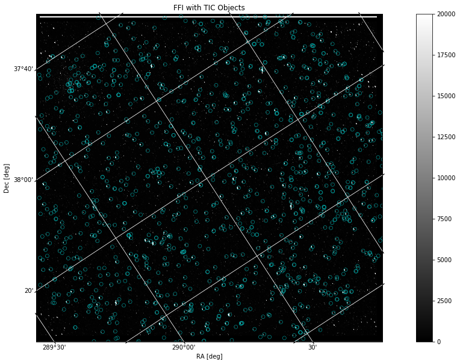
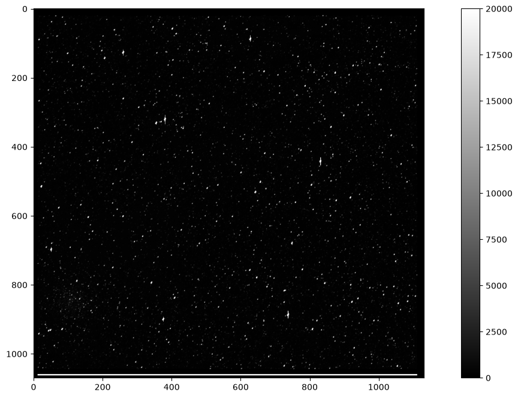
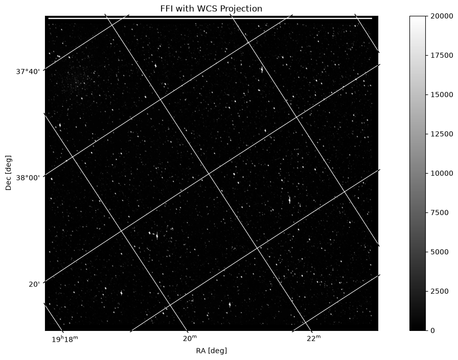
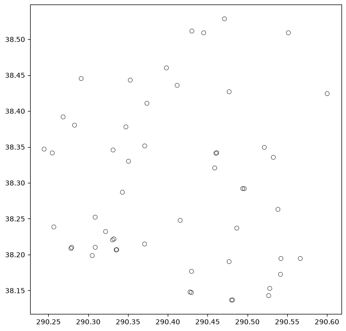
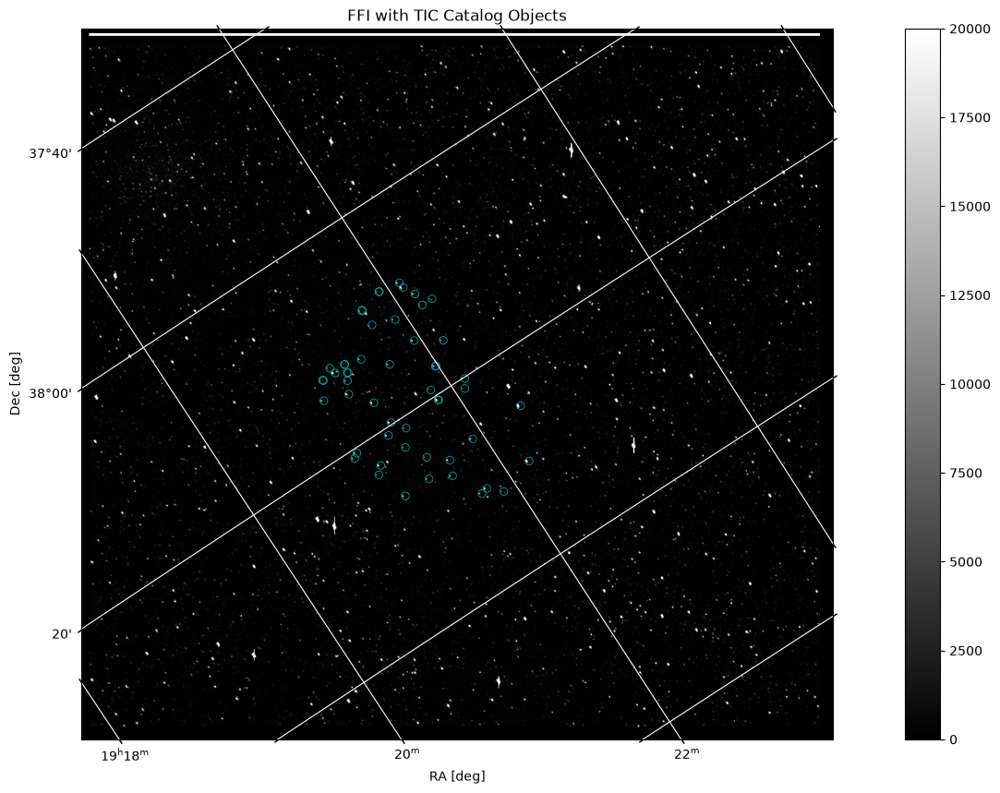

Plotting a Catalog over a Kepler Full Frame Image File#

This tutorial demonstrates how to access the WCS (World Coordinate System) from a full frame image file and use this data to plot a catalog of objects over the FFI.
Table of Contents#
Introduction
Imports
Getting the Data
File Information
Displaying Image Data
Overplotting Objects
Additional Resources
About this Notebook
Introduction#
Full Frame Image file background: A Full Frame Image (FFI) contains values for every pixel in each of the 84 channels. Standard calibrations, such as flat fields, blacks, and smears have been applied to the calibrated FFIs. These files also contain a World Coordinate System (WCS) that attaches RA and Dec coordinates to pixel x and y values.
Some notes about the file: kplr2009170043915_ffi-cal.fits
The filename contains phrases for identification, where
kplr = Kepler
2009170043915 = year 2009, day 170, time 04:39:15
ffi-cal = calibrated FFI image
Defining some terms:
HDU: Header Data Unit; a FITS file is made up of Header or Data units that contain information, data, and metadata relating to the file. The first HDU is called the primary, and anything that follows is considered an extension.
TIC: TESS Input Catalog; a catalog of luminous sources on the sky to be used by the TESS mission. We will use the TIC in this notebook to query a catalog of objects that we will then plot over an image from Kepler.
WCS: World Coordinate System; coordinates attached to each pixel of an N-dimensional image of a FITS file. For example, a specified celestial RA and Dec associated with pixel location in the image.
For more information about the Kepler mission and collected data, visit the Kepler archive page. To read more details about light curves and important data terms, look in the Kepler archive manual.
Imports#
Let’s start by importing some libraries to the environment:
numpy to handle array functions
astropy.io fits for accessing fits files
astropy.wcs WCS to project the World Coordinate System on the plot
astropy.table Table for creating tidy tables of the data
matplotlib.pyplot for plotting data
%matplotlib inline
from astropy.io import fits
from astropy.wcs import WCS
from astropy.table import Table
import matplotlib.pyplot as plt
Getting the Data#
Start by importing libraries from Astroquery. For a longer, more detailed description using of Astroquery, please visit this tutorial or read the Astroquery documentation.
from astroquery.mast import Observations
Next, we need to find the data file. This is similar to searching for the data using the MAST Portal in that we will be using certain keywords to find the file. The object we are looking for is kplr2009170043915, collected by the Kepler spacecraft. We are searching for an FFI file of this object:
kplrObs = Observations.query_criteria(obs_id="kplr2009170043915_84", obs_collection="KeplerFFI")
kplrProds = Observations.get_product_list(kplrObs[0])
yourProd = Observations.filter_products(kplrProds, extension='kplr2009170043915_ffi-cal.fits',
mrp_only=False)
yourProd
| obsID | obs_collection | dataproduct_type | obs_id | description | type | dataURI | productType | productGroupDescription | productSubGroupDescription | productDocumentationURL | project | prvversion | proposal_id | productFilename | size | parent_obsid | dataRights | calib_level | filters |
|---|---|---|---|---|---|---|---|---|---|---|---|---|---|---|---|---|---|---|---|
| str6 | str9 | str5 | str20 | str22 | str1 | str106 | str7 | str28 | str1 | str1 | str6 | str1 | str1 | str37 | int64 | str6 | str6 | int64 | str6 |
| 385623 | KeplerFFI | image | kplr2009170043915_84 | Full Frame Image (FFI) | C | mast:KEPLERFFI/url/missions/kepler/ffi/kplr2009170043915_ffi-cal.fits | SCIENCE | Minimum Recommended Products | -- | -- | Kepler | -- | -- | kplr2009170043915_ffi-cal.fits | 407882880 | 385623 | PUBLIC | 1 | KEPLER |
Now that we’ve found the data file, we can download it using the reults shown in the table above:
Observations.download_products(yourProd, mrp_only=False, cache=False)
WARNING: CloudAccessWarning: Please install the `boto3` and `botocore` packages to enable cloud dataset access. [astroquery.mast.observations]
Downloading URL https://mast.stsci.edu/api/v0.1/Download/file?uri=mast:KEPLERFFI/url/missions/kepler/ffi/kplr2009170043915_ffi-cal.fits to mastDownload/KeplerFFI/kplr2009170043915_84/kplr2009170043915_ffi-cal.fits ...
[Done]
| Local Path | Status | Message | URL |
|---|---|---|---|
| str74 | str8 | object | object |
| mastDownload/KeplerFFI/kplr2009170043915_84/kplr2009170043915_ffi-cal.fits | COMPLETE | None | None |
Reading FITS Extensions#
Now that we have the file, we can start working with the data. We will begin by assigning a shorter name to the file to make it easier to use. Then, using the info function from astropy.io.fits, we can see some information about the FITS Header Data Units:
filename = "./mastDownload/KeplerFFI/kplr2009170043915_84/kplr2009170043915_ffi-cal.fits"
fits.info(filename)
Filename: ./mastDownload/KeplerFFI/kplr2009170043915_84/kplr2009170043915_ffi-cal.fits
No. Name Ver Type Cards Dimensions Format
0 PRIMARY 1 PrimaryHDU 57 ()
1 MOD.OUT 2.1 1 ImageHDU 100 (1132, 1070) float32
2 MOD.OUT 2.2 1 ImageHDU 100 (1132, 1070) float32
3 MOD.OUT 2.3 1 ImageHDU 100 (1132, 1070) float32
4 MOD.OUT 2.4 1 ImageHDU 100 (1132, 1070) float32
5 MOD.OUT 3.1 1 ImageHDU 100 (1132, 1070) float32
6 MOD.OUT 3.2 1 ImageHDU 100 (1132, 1070) float32
7 MOD.OUT 3.3 1 ImageHDU 100 (1132, 1070) float32
8 MOD.OUT 3.4 1 ImageHDU 100 (1132, 1070) float32
9 MOD.OUT 4.1 1 ImageHDU 100 (1132, 1070) float32
10 MOD.OUT 4.2 1 ImageHDU 100 (1132, 1070) float32
11 MOD.OUT 4.3 1 ImageHDU 100 (1132, 1070) float32
12 MOD.OUT 4.4 1 ImageHDU 100 (1132, 1070) float32
13 MOD.OUT 6.1 1 ImageHDU 100 (1132, 1070) float32
14 MOD.OUT 6.2 1 ImageHDU 100 (1132, 1070) float32
15 MOD.OUT 6.3 1 ImageHDU 100 (1132, 1070) float32
16 MOD.OUT 6.4 1 ImageHDU 100 (1132, 1070) float32
17 MOD.OUT 7.1 1 ImageHDU 100 (1132, 1070) float32
18 MOD.OUT 7.2 1 ImageHDU 100 (1132, 1070) float32
19 MOD.OUT 7.3 1 ImageHDU 100 (1132, 1070) float32
20 MOD.OUT 7.4 1 ImageHDU 100 (1132, 1070) float32
21 MOD.OUT 8.1 1 ImageHDU 100 (1132, 1070) float32
22 MOD.OUT 8.2 1 ImageHDU 100 (1132, 1070) float32
23 MOD.OUT 8.3 1 ImageHDU 100 (1132, 1070) float32
24 MOD.OUT 8.4 1 ImageHDU 100 (1132, 1070) float32
25 MOD.OUT 9.1 1 ImageHDU 100 (1132, 1070) float32
26 MOD.OUT 9.2 1 ImageHDU 100 (1132, 1070) float32
27 MOD.OUT 9.3 1 ImageHDU 100 (1132, 1070) float32
28 MOD.OUT 9.4 1 ImageHDU 100 (1132, 1070) float32
29 MOD.OUT 10.1 1 ImageHDU 100 (1132, 1070) float32
30 MOD.OUT 10.2 1 ImageHDU 100 (1132, 1070) float32
31 MOD.OUT 10.3 1 ImageHDU 100 (1132, 1070) float32
32 MOD.OUT 10.4 1 ImageHDU 100 (1132, 1070) float32
33 MOD.OUT 11.1 1 ImageHDU 100 (1132, 1070) float32
34 MOD.OUT 11.2 1 ImageHDU 100 (1132, 1070) float32
35 MOD.OUT 11.3 1 ImageHDU 100 (1132, 1070) float32
36 MOD.OUT 11.4 1 ImageHDU 100 (1132, 1070) float32
37 MOD.OUT 12.1 1 ImageHDU 100 (1132, 1070) float32
38 MOD.OUT 12.2 1 ImageHDU 100 (1132, 1070) float32
39 MOD.OUT 12.3 1 ImageHDU 100 (1132, 1070) float32
40 MOD.OUT 12.4 1 ImageHDU 100 (1132, 1070) float32
41 MOD.OUT 13.1 1 ImageHDU 100 (1132, 1070) float32
42 MOD.OUT 13.2 1 ImageHDU 100 (1132, 1070) float32
43 MOD.OUT 13.3 1 ImageHDU 100 (1132, 1070) float32
44 MOD.OUT 13.4 1 ImageHDU 100 (1132, 1070) float32
45 MOD.OUT 14.1 1 ImageHDU 100 (1132, 1070) float32
46 MOD.OUT 14.2 1 ImageHDU 100 (1132, 1070) float32
47 MOD.OUT 14.3 1 ImageHDU 100 (1132, 1070) float32
48 MOD.OUT 14.4 1 ImageHDU 100 (1132, 1070) float32
49 MOD.OUT 15.1 1 ImageHDU 100 (1132, 1070) float32
50 MOD.OUT 15.2 1 ImageHDU 100 (1132, 1070) float32
51 MOD.OUT 15.3 1 ImageHDU 100 (1132, 1070) float32
52 MOD.OUT 15.4 1 ImageHDU 100 (1132, 1070) float32
53 MOD.OUT 16.1 1 ImageHDU 100 (1132, 1070) float32
54 MOD.OUT 16.2 1 ImageHDU 100 (1132, 1070) float32
55 MOD.OUT 16.3 1 ImageHDU 100 (1132, 1070) float32
56 MOD.OUT 16.4 1 ImageHDU 100 (1132, 1070) float32
57 MOD.OUT 17.1 1 ImageHDU 100 (1132, 1070) float32
58 MOD.OUT 17.2 1 ImageHDU 100 (1132, 1070) float32
59 MOD.OUT 17.3 1 ImageHDU 100 (1132, 1070) float32
60 MOD.OUT 17.4 1 ImageHDU 100 (1132, 1070) float32
61 MOD.OUT 18.1 1 ImageHDU 100 (1132, 1070) float32
62 MOD.OUT 18.2 1 ImageHDU 100 (1132, 1070) float32
63 MOD.OUT 18.3 1 ImageHDU 100 (1132, 1070) float32
64 MOD.OUT 18.4 1 ImageHDU 100 (1132, 1070) float32
65 MOD.OUT 19.1 1 ImageHDU 100 (1132, 1070) float32
66 MOD.OUT 19.2 1 ImageHDU 100 (1132, 1070) float32
67 MOD.OUT 19.3 1 ImageHDU 100 (1132, 1070) float32
68 MOD.OUT 19.4 1 ImageHDU 100 (1132, 1070) float32
69 MOD.OUT 20.1 1 ImageHDU 100 (1132, 1070) float32
70 MOD.OUT 20.2 1 ImageHDU 100 (1132, 1070) float32
71 MOD.OUT 20.3 1 ImageHDU 100 (1132, 1070) float32
72 MOD.OUT 20.4 1 ImageHDU 100 (1132, 1070) float32
73 MOD.OUT 22.1 1 ImageHDU 100 (1132, 1070) float32
74 MOD.OUT 22.2 1 ImageHDU 100 (1132, 1070) float32
75 MOD.OUT 22.3 1 ImageHDU 100 (1132, 1070) float32
76 MOD.OUT 22.4 1 ImageHDU 100 (1132, 1070) float32
77 MOD.OUT 23.1 1 ImageHDU 100 (1132, 1070) float32
78 MOD.OUT 23.2 1 ImageHDU 100 (1132, 1070) float32
79 MOD.OUT 23.3 1 ImageHDU 100 (1132, 1070) float32
80 MOD.OUT 23.4 1 ImageHDU 100 (1132, 1070) float32
81 MOD.OUT 24.1 1 ImageHDU 100 (1132, 1070) float32
82 MOD.OUT 24.2 1 ImageHDU 100 (1132, 1070) float32
83 MOD.OUT 24.3 1 ImageHDU 100 (1132, 1070) float32
84 MOD.OUT 24.4 1 ImageHDU 100 (1132, 1070) float32
**No. 0 (Primary): **
This HDU contains meta-data related to the entire file.**No. 1-84 (Image): **
Each of the 84 image extensions contains an array that can be plotted as an image. We will plot one in this tutorial along with catalog data.
Let’s say we wanted to see more information about the header and extensions than what the fits.info command gave us. For example, we can access information stored in the header of any of the Image extensions (No.1 - 84, MOD.OUT). The following line opens the FITS file, writes the first HDU extension into header1, and then closes the file. Only 24 rows of data are displayed here but you can view them all by adjusting the range:
with fits.open(filename) as hdulist:
header1 = hdulist[1].header
print(repr(header1[1:25]))
BITPIX = -32 / array data type
NAXIS = 2 / NAXIS
NAXIS1 = 1132 / length of first array dimension
NAXIS2 = 1070 / length of second array dimension
PCOUNT = 0 / group parameter count (not used)
GCOUNT = 1 / group count (not used)
INHERIT = T / inherit the primary header
EXTNAME = 'MOD.OUT 2.1' / name of extension
EXTVER = 1 / extension version number (not format version)
TELESCOP= 'Kepler ' / telescope
INSTRUME= 'Kepler Photometer' / detector type
CHANNEL = 1 / CCD channel
SKYGROUP= 81 / roll-independent location of channel
MODULE = 2 / CCD module
OUTPUT = 1 / CCD output
TIMEREF = 'SOLARSYSTEM' / barycentric correction applied to times
TASSIGN = 'SPACECRAFT' / where time is assigned
TIMESYS = 'TDB ' / time system is barycentric JD
MJDSTART= 55001.17349214 / [d] start of observation in spacecraft MJD
MJDEND = 55001.1939257 / [d] end of observation in spacecraft MJD
BJDREFI = 2454833 / integer part of BJD reference date
BJDREFF = 0.00000000 / fraction of the day in BJD reference date
TIMEUNIT= 'd ' / time unit for TIME, TSTART and TSTOP
TSTART = 168.67667104 / observation start time in BJD-BJDREF
Displaying Image Data#
First, let’s find the WCS information associated with the FITS file we are using. One way to do this is to access the header and print the rows containing the relevant data (54 - 65). This gives us the reference coordinates (CRVAL1, CRVAL2) that correspond to the reference pixels:
with fits.open(filename) as hdulist:
header1 = hdulist[1].header
print(repr(header1[54:61]))
WCSAXES = 2 / number of WCS axes
CTYPE1 = 'RA---TAN-SIP' / Gnomonic projection + SIP distortions
CTYPE2 = 'DEC--TAN-SIP' / Gnomonic projection + SIP distortions
CRVAL1 = 290.4620065226813 / RA at CRPIX1, CRPIX2
CRVAL2 = 38.32946356799192 / DEC at CRPIX1, CRPIX2
CRPIX1 = 533.0 / X reference pixel
CRPIX2 = 521.0 / Y reference pixel
Let’s pick an image HDU and display its array. We can also choose to print the length of the array to get an idea of the dimensions of the image:
with fits.open(filename) as hdulist:
imgdata = hdulist[1].data
print(len(imgdata))
print(imgdata)
1070
[[ 2.8926212e+01 5.7084761e+00 2.8518679e+00 ... 2.3335369e-02
3.8872162e-01 2.4866710e+00]
[ 2.5392172e+01 4.9826989e+00 2.3192320e+00 ... -3.5835370e-01
9.4126135e-01 1.4343496e-01]
[ 2.7359493e+01 5.5186005e+00 1.1480473e+00 ... 5.8914202e-01
-2.0753877e+00 2.3046710e-01]
...
[-3.8266034e+02 -9.6860485e+00 1.7396482e+01 ... 1.3947951e+00
-8.3887035e-01 9.5944041e-01]
[-3.8286859e+02 -5.6933088e+00 2.0129442e+01 ... -7.7534288e-01
1.5140564e+00 1.3752979e+00]
[-3.8489960e+02 -3.4747849e+00 1.5189555e+00 ... 1.0207459e+00
6.7454106e-01 -2.0665376e-02]]
We can now plot this array as an image:
fig = plt.figure(figsize=(16, 8))
plt.imshow(imgdata, cmap=plt.cm.gray)
plt.colorbar()
plt.clim(0, 20000)

Now that we’ve seen the image and the WCS information, we can plot FFI with a WCS projection. To do this, first we will access the file header and assign a WCS object. Then we will plot the image with the projection, and add labels and a grid for usability:
hdu = fits.open(filename)[1]
wcs = WCS(hdu.header)
fig = plt.figure(figsize=(16, 8))
ax = plt.subplot(projection=wcs)
im = ax.imshow(hdu.data, cmap=plt.cm.gray, origin='lower', clim=(0, 20000))
fig.colorbar(im)
plt.title('FFI with WCS Projection')
ax.set_xlabel('RA [deg]')
ax.set_ylabel('Dec [deg]')
ax.grid(color='white', ls='solid')
WARNING: FITSFixedWarning: 'datfix' made the change 'Set MJD-OBS to 55001.173492 from DATE-OBS.
Set MJD-END to 55001.193926 from DATE-END'. [astropy.wcs.wcs]

Getting the Catalog Data#
Now that we have an image, we can use astroquery to retrieve a catalog of objects and overlay it onto the image. First, we will start with importing catalog data from astroquery:
from astroquery.mast import Catalogs
We will query a catalog of objects from TIC (TESS Input Catalog). For more information about TIC, follow this link. Our search will be centered on the same RA and Declination listed in the header of the FFI image and will list objects within a 1 degree radius of that location. It might take a couple seconds longer than usual for this cell to run:
catalogData = Catalogs.query_region("290.4620065226813 38.32946356799192", radius="0.2 deg", catalog="tic_v82")
WARNING: InputWarning: Coordinate string is being interpreted as an ICRS coordinate provided in degrees. [astroquery.utils.commons]
why tic??? explain…
catalogData = Catalogs.query_region("290.4620065226813 38.32946356799192", radius="0.2 deg", catalog="tic_v82")
dattab = Table(catalogData)
dattab
WARNING: InputWarning: Coordinate string is being interpreted as an ICRS coordinate provided in degrees. [astroquery.utils.commons]
| id | version | hip | tyc | ucac | twomass | sdss | allwise | gaia | apass | kic | objtype | typesrc | ra | dec | posflag | pmra | e_pmra | pmdec | e_pmdec | pmflag | plx | e_plx | parflag | gallong | gallat | eclong | eclat | bmag | e_bmag | vmag | e_vmag | umag | e_umag | gmag | e_gmag | rmag | e_rmag | imag | e_imag | zmag | e_zmag | jmag | e_jmag | hmag | e_hmag | kmag | e_kmag | twomflag | prox | w1mag | e_w1mag | w2mag | e_w2mag | w3mag | e_w3mag | w4mag | e_w4mag | gaiamag | e_gaiamag | tmag | e_tmag | tessflag | spflag | teff | e_teff | logg | e_logg | mh | e_mh | rad | e_rad | mass | e_mass | rho | e_rho | lumclass | lum | e_lum | d | e_d | ebv | e_ebv | numcont | contratio | disposition | duplicate_id | priority | eneg_ebv | epos_ebv | ebvflag | eneg_mass | epos_mass | eneg_rad | epos_rad | eneg_rho | epos_rho | eneg_logg | epos_logg | eneg_lum | epos_lum | eneg_dist | epos_dist | distflag | eneg_teff | epos_teff | teffflag | gaiabp | e_gaiabp | gaiarp | e_gaiarp | gaiaqflag | vmagflag | bmagflag | splists | e_ra | e_dec | ra_orig | dec_orig | e_ra_orig | e_dec_orig | raddflag | wdflag | objid |
|---|---|---|---|---|---|---|---|---|---|---|---|---|---|---|---|---|---|---|---|---|---|---|---|---|---|---|---|---|---|---|---|---|---|---|---|---|---|---|---|---|---|---|---|---|---|---|---|---|---|---|---|---|---|---|---|---|---|---|---|---|---|---|---|---|---|---|---|---|---|---|---|---|---|---|---|---|---|---|---|---|---|---|---|---|---|---|---|---|---|---|---|---|---|---|---|---|---|---|---|---|---|---|---|---|---|---|---|---|---|---|---|---|---|---|---|---|---|---|---|---|---|---|---|
| deg | deg | .yr**-1 | mas / yr | mas / yr | mas / yr | mas | mas | deg | deg | deg | deg | mag | mag | mag | mag | mag | mag | mag | mag | mag | mag | mag | mag | mag | mag | mag | mag | mag | mag | mag | mag | arcsec | mag | mag | mag | mag | mag | mag | mag | mag | mag | mag | mag | mag | K | K | cm / s2 | cm / s2 | solRad | solRad | solMass | solMass | solLum | solLum | pc | pc | mag | mag | mag | mag | solMass | solMass | solRad | solRad | cm / s2 | cm / s2 | solLum | solLum | pc | pc | K | K | mag | mag | mag | mag | mas | mas | deg | deg | mas | mas | |||||||||||||||||||||||||||||||||||||||||
| int64 | object | int32 | object | object | object | int64 | object | object | object | int32 | object | object | float64 | float64 | object | float32 | float32 | float32 | float32 | object | float32 | float32 | object | float64 | float64 | float64 | float64 | float32 | float32 | float32 | float32 | float32 | float32 | float32 | float32 | float32 | float32 | float32 | float32 | float32 | float32 | float32 | float32 | float32 | float32 | float32 | float32 | object | float32 | float32 | float32 | float32 | float32 | float32 | float32 | float32 | float32 | float32 | float32 | float32 | float32 | object | object | float32 | float32 | float32 | float32 | float32 | float32 | float32 | float32 | float32 | float32 | float32 | float32 | object | float32 | float32 | float32 | float32 | float32 | float32 | int32 | float32 | object | int64 | float32 | float32 | float32 | object | float32 | float32 | float32 | float32 | float32 | float32 | float32 | float32 | float32 | float32 | float32 | float32 | object | float32 | float32 | object | float32 | float32 | float32 | float32 | int32 | object | object | object | float64 | float64 | float64 | float64 | float64 | float64 | int32 | int32 | int64 |
| 122305159 | 20190415 | -- | 19210186+3813170 | 1237672004760046964 | J192101.86+381316.7 | 2052815559411436800 | 3111820 | STAR | tmgaia2 | 290.25790199232 | 38.2213249004981 | tmgaia2 | -0.37616 | 0.408529 | 6.67613 | 0.471765 | gaia2 | 1.0958 | 0.226764 | gaia2 | 70.3833671645135 | 11.074368920037 | 302.311219566016 | 59.4088640975753 | -- | -- | 19.721 | 0.0714 | 23.1318 | 0.760966 | 20.7518 | 0.0313632 | 19.1944 | 0.0134282 | 18.3331 | 0.0096568 | 17.9004 | 0.0226086 | 16.547 | 0.116 | 15.748 | 0.136 | 15.628 | 0.225 | BBD-222-111-000-0-0 | -- | 15.889 | 0.041 | 15.955 | 0.115 | 12.855 | -- | 8.949 | -- | 19.0189 | 0.002843 | 18.0939 | 0.0083 | rered | gaia2 | 3952.0 | 129.0 | -- | -- | -- | -- | -- | -- | -- | -- | -- | -- | DWARF | -- | -- | 938.015 | 255.424 | 0.0749929 | 0.010848805 | -- | -- | -- | -- | 0.00926381 | 0.0124338 | panstarrs | -- | -- | -- | -- | -- | -- | -- | -- | -- | -- | 191.633 | 319.215 | bj2018 | -- | -- | dered | 19.9372 | 0.075778 | 17.9689 | 0.02332 | 1 | gaia2 | 6.70416917997271 | 7.31558836254847 | 290.257899930809 | 38.221353644947 | 0.187673102047668 | 0.217395681760847 | 1 | 0 | 273484895 | ||||||
| 1877310949 | 20190415 | -- | 1237672004760046448 | 2052803292984788224 | -- | STAR | gaia2 | 290.324299923222 | 38.165135152569 | gaia2 | -1.95683 | 0.389988 | -4.19103 | 0.392887 | gaia2 | 0.0886998 | 0.219228 | gaia2 | 70.355160522336 | 11.0028565213541 | 302.379962268243 | 59.3406428085978 | -- | -- | 19.1449 | 0.0499 | 21.0042 | 0.119363 | 19.4387 | 0.0126944 | 18.9191 | 0.0113843 | 18.6914 | 0.0121239 | 18.5835 | 0.0375336 | -- | -- | -- | -- | -- | -- | -- | -- | -- | -- | -- | -- | -- | -- | -- | 18.9621 | 0.003137 | 18.4626 | 0.0087 | rered | gaia2 | 5838.0 | 221.0 | 4.95847 | -- | -- | -- | 0.56285 | -- | 1.05 | -- | 5.88859 | -- | DWARF | 0.33154026 | -- | 3570.46 | 1704.97 | 0.119051 | 0.008306525 | -- | -- | -- | -- | 0.00585325 | 0.0107598 | panstarrs | -- | -- | -- | -- | -- | -- | -- | -- | -- | -- | 1266.74 | 2143.21 | bj2018 | -- | -- | dered | 19.3064 | 0.050011 | 18.3494 | 0.027849 | 1 | gaia2 | 6.3987242263844 | 6.0928045692025 | 290.324289207264 | 38.1651171078568 | 0.175939490810992 | 0.192952650260647 | 1 | 0 | 274587477 | |||||||||
| 1877310957 | 20190415 | -- | 1237672004760046394 | 2052803297284470784 | -- | STAR | gaia2 | 290.322798487384 | 38.172128587794 | gaia2 | -2.81385 | 0.545833 | -2.02362 | 0.58778 | gaia2 | -0.10577 | 0.319759 | gaia2 | 70.3610385438803 | 11.0069807723676 | 302.381450205515 | 59.3476944717249 | -- | -- | 19.6325 | 0.0496 | 21.2176 | 0.143146 | 19.917 | 0.0172566 | 19.4156 | 0.0156988 | 19.1063 | 0.0159356 | 19.117 | 0.0576969 | -- | -- | -- | -- | -- | -- | -- | -- | -- | -- | -- | -- | -- | -- | -- | 19.4467 | 0.00427 | 18.9428 | 0.0092 | rered | gaia2 | 5809.0 | 211.0 | -- | -- | -- | -- | -- | -- | -- | -- | -- | -- | DWARF | -- | -- | 3593.03 | 1816.35 | 0.119055 | 0.008314985 | -- | -- | -- | -- | 0.00585577 | 0.0107742 | panstarrs | -- | -- | -- | -- | -- | -- | -- | -- | -- | -- | 1379.75 | 2252.96 | bj2018 | -- | -- | dered | 19.8071 | 0.046563 | 18.8411 | 0.026986 | 1 | gaia2 | 8.95615915521043 | 9.11485933070645 | 290.32278307675 | 38.1721198749866 | 0.253863346179474 | 0.278945282208579 | 1 | 0 | 274587485 | |||||||||
| 122375922 | 20190415 | -- | 642-067403 | 19211260+3813178 | 1237672004760044408 | J192112.59+381317.5 | 2052816800661663232 | 3112003 | STAR | tmgaia2 | 290.302497288038 | 38.2215812927547 | tmgaia2 | -6.28885 | 0.0439486 | -12.5571 | 0.0425641 | gaia2 | 0.420776 | 0.0268172 | gaia2 | 70.3992190182371 | 11.0429763342359 | 302.377616868307 | 59.3996204122692 | 16.761 | 0.067 | 15.354 | 0.137 | 17.4106 | 0.0109737 | 15.6681 | 0.00313517 | 14.9919 | 0.00308274 | 14.7455 | 0.00315555 | 14.621 | 0.00437049 | 13.79 | 0.025 | 13.376 | 0.024 | 13.322 | 0.037 | AAA-222-111-000-0-0 | -- | 13.181 | 0.023 | 13.289 | 0.027 | 12.895 | -- | 8.872 | -- | 15.0732 | 0.000344 | 14.502 | 0.0075 | rered | gaia2 | 5291.0 | 122.0 | -- | -- | -- | -- | 2.53155 | -- | -- | -- | -- | -- | GIANT | -- | -- | 2224.55 | 135.96 | 0.0900853 | 0.00730236 | -- | -- | -- | -- | 0.00451012 | 0.0100946 | panstarrs | -- | -- | -- | -- | -- | -- | -- | -- | -- | -- | 127.86 | 144.06 | bj2018 | -- | -- | dered | 15.5517 | 0.00257 | 14.4459 | 0.001868 | 1 | ucac4 | bpbj | 0.721257622484224 | 0.660154618331432 | 290.302462822446 | 38.2215272274676 | 0.0215389156650541 | 0.0232930963531409 | 0 | 0 | 274216850 | ||||
| 1877311403 | 20190415 | -- | -- | 2052805049631134080 | -- | STAR | gaia2 | 290.314329049856 | 38.1955133234686 | gaia2 | -2.39127 | 0.705507 | -3.7636 | 0.726201 | gaia2 | 0.0531727 | 0.407626 | gaia2 | 70.3794864838712 | 11.0232061388211 | 302.381312168802 | 59.3720082500611 | -- | -- | 20.1332 | 0.0614 | -- | -- | -- | -- | -- | -- | -- | -- | -- | -- | -- | -- | -- | -- | -- | -- | -- | -- | -- | -- | -- | -- | -- | -- | -- | 19.7475 | 0.00535 | 19.0371 | 0.0083 | gbprp | gaia2 | -- | -- | -- | -- | -- | -- | -- | -- | -- | -- | -- | -- | -- | -- | 3017.43 | 1732.39 | 0.118945 | 0.00824891 | -- | -- | -- | -- | 0.00630202 | 0.0101958 | panstarrs | -- | -- | -- | -- | -- | -- | -- | -- | -- | -- | 1273.25 | 2191.52 | bj2018 | -- | -- | 20.1197 | 0.05929 | 18.6815 | 0.053787 | 0 | gaia2 | 11.5769735362911 | 11.261465884344 | 290.314315949364 | 38.1954971190803 | 0.328781659089363 | 0.3470989987077 | 1 | 0 | 274587709 | |||||||||||
| 1877311249 | 20190415 | -- | 1237672004760110936 | 2052804461215482496 | -- | STAR | gaia2 | 290.421407842534 | 38.2048373549329 | gaia2 | -3.01598 | 0.369032 | -3.69593 | 0.402776 | gaia2 | 0.624637 | 0.208245 | gaia2 | 70.4255938457444 | 10.9516573642442 | 302.545209210012 | 59.3581191239147 | -- | -- | 19.1707 | 0.0487 | 21.3877 | 0.166247 | 19.5834 | 0.013772 | 18.8882 | 0.0112717 | 18.573 | 0.0113237 | 18.6702 | 0.0402937 | -- | -- | -- | -- | -- | -- | -- | -- | -- | -- | -- | -- | -- | -- | -- | 18.8841 | 0.002596 | 18.2567 | 0.0081 | rered | gaia2 | 5004.0 | 149.0 | -- | -- | -- | -- | -- | -- | -- | -- | -- | -- | DWARF | -- | -- | 1647.63 | 791.675 | 0.092022 | 0.007874805 | -- | -- | -- | -- | 0.00702147 | 0.00872814 | panstarrs | -- | -- | -- | -- | -- | -- | -- | -- | -- | -- | 497.29 | 1086.06 | bj2018 | -- | -- | dered | 19.4741 | 0.029138 | 18.2475 | 0.024006 | 1 | gaia2 | 6.05573287841278 | 6.24619194887333 | 290.421391317474 | 38.2048214419021 | 0.170727987108731 | 0.19878443949671 | 1 | 0 | 275338495 | |||||||||
| 1877311696 | 20190415 | -- | -- | 2052806144842632576 | -- | STAR | gaia2 | 290.530950437707 | 38.1555296362874 | gaia2 | -1.28684 | 0.703853 | -5.23464 | 0.751871 | gaia2 | -0.467717 | 0.405574 | gaia2 | 70.4190051175045 | 10.8526421260621 | 302.681225660103 | 59.2871960579981 | -- | -- | 20.1037 | 0.0575 | -- | -- | -- | -- | -- | -- | -- | -- | -- | -- | -- | -- | -- | -- | -- | -- | -- | -- | -- | -- | -- | -- | -- | -- | -- | 19.7826 | 0.006198 | 19.121 | 0.0096 | rered | gaia2 | 4807.0 | 193.0 | 4.72933 | -- | -- | -- | 0.631561 | -- | 0.78 | -- | 3.09635 | -- | DWARF | 0.19187626 | -- | 3857.01 | 1927.97 | 0.0808453 | 0.00741097 | -- | -- | -- | -- | 0.0105301 | 0.00429184 | panstarrs | -- | -- | -- | -- | -- | -- | -- | -- | -- | -- | 1498.88 | 2357.07 | bj2018 | -- | -- | dered | 20.3059 | 0.066551 | 19.0017 | 0.033553 | 1 | gaia2 | 11.5485760726523 | 11.6595369828982 | 290.530943391665 | 38.1555070982541 | 0.332743077807189 | 0.359270095569874 | 1 | 0 | 276122728 | |||||||||
| 1877311895 | 20190415 | -- | 1237668681001927740 | 2052806969476625280 | -- | STAR | gaia2 | 290.513051322784 | 38.1831458111874 | gaia2 | 2.34832 | 1.12781 | -3.33461 | 1.2334 | gaia2 | 1.10279 | 0.735773 | gaia2 | 70.4379605499778 | 10.8774238572587 | 302.669485558905 | 59.317605846514 | -- | -- | 20.7235 | 0.0844 | 25.0123 | 2.47397 | 21.2362 | 0.0409081 | 20.3636 | 0.0286843 | 20.0046 | 0.0331095 | 19.7187 | 0.0874889 | -- | -- | -- | -- | -- | -- | -- | -- | -- | -- | -- | -- | -- | -- | -- | 20.3701 | 0.007131 | 19.6799 | 0.012 | rered | gaia2 | 4644.0 | 281.0 | -- | -- | -- | -- | -- | -- | -- | -- | -- | -- | DWARF | -- | -- | 1745.75 | 1613.93 | 0.067075 | 0.01330668 | -- | -- | -- | -- | 0.0168095 | 0.00980386 | panstarrs | -- | -- | -- | -- | -- | -- | -- | -- | -- | -- | 982.539 | 2245.33 | bj2018 | -- | -- | dered | 21.1041 | 0.129422 | 19.7314 | 0.067772 | 1 | gaia2 | 18.5063614294578 | 19.1297053017516 | 290.513064185791 | 38.1831314538394 | 0.533963279056659 | 0.67762204942299 | 1 | 0 | 276122837 | |||||||||
| 1877311442 | 20190415 | -- | 1237672004760044678 | 2052805217130208896 | -- | STAR | gaia2 | 290.347592314343 | 38.2365851114229 | gaia2 | -0.989419 | 1.83808 | -1.38153 | 1.94253 | gaia2 | -0.0163233 | 0.934908 | gaia2 | 70.4287641437722 | 11.0176974922817 | 302.452599026328 | 59.4044453851806 | -- | -- | 20.816 | 0.0696 | 30.0 | 50.0 | 21.1903 | 0.0442881 | 20.5399 | 0.0370451 | 20.2501 | 0.0381967 | 20.4134 | 0.174831 | -- | -- | -- | -- | -- | -- | -- | -- | -- | -- | -- | -- | -- | -- | -- | 20.693 | 0.010575 | 20.2925 | 0.0165 | gbprp | gaia2 | -- | -- | -- | -- | -- | -- | -- | -- | -- | -- | -- | -- | -- | -- | 2616.72 | 1776.9 | 0.104111 | 0.0092844 | -- | -- | -- | -- | 0.0139512 | 0.0046176 | panstarrs | -- | -- | -- | -- | -- | -- | -- | -- | -- | -- | 1319.89 | 2233.91 | bj2018 | -- | -- | 20.8457 | 0.14447 | 20.085 | 0.122548 | 0 | gaia2 | 30.164536752386 | 30.1176418305934 | 290.347586890784 | 38.2365791631688 | 0.801474106404318 | 0.712405446135347 | 1 | 1 | 274587748 | |||||||||||
| ... | ... | ... | ... | ... | ... | ... | ... | ... | ... | ... | ... | ... | ... | ... | ... | ... | ... | ... | ... | ... | ... | ... | ... | ... | ... | ... | ... | ... | ... | ... | ... | ... | ... | ... | ... | ... | ... | ... | ... | ... | ... | ... | ... | ... | ... | ... | ... | ... | ... | ... | ... | ... | ... | ... | ... | ... | ... | ... | ... | ... | ... | ... | ... | ... | ... | ... | ... | ... | ... | ... | ... | ... | ... | ... | ... | ... | ... | ... | ... | ... | ... | ... | ... | ... | ... | ... | ... | ... | ... | ... | ... | ... | ... | ... | ... | ... | ... | ... | ... | ... | ... | ... | ... | ... | ... | ... | ... | ... | ... | ... | ... | ... | ... | ... | ... | ... | ... | ... | ... | ... | ... | ... | ... |
| 1877312317 | 20190415 | -- | 1237668681001928596 | 2052808446952776192 | -- | STAR | gaia2 | 290.658626433201 | 38.2803914937655 | gaia2 | 1.49374 | 0.435648 | -1.49904 | 0.820181 | gaia2 | 0.753337 | 0.251042 | gaia2 | 70.5781118531046 | 10.8175387824513 | 302.9375107908 | 59.3797490973099 | -- | -- | 18.4242 | 0.0804 | 30.0 | 50.0 | 17.2841 | 0.00980585 | 15.8631 | 0.00372503 | 16.2182 | 0.00659174 | 30.0 | 50.0 | -- | -- | -- | -- | -- | -- | -- | -- | -- | -- | -- | -- | -- | -- | -- | 18.2745 | 0.005507 | 17.8275 | 0.0532 | gbprp | gaia2 | -- | -- | -- | -- | -- | -- | -- | -- | -- | -- | -- | -- | -- | -- | 1419.33 | 785.635 | 0.0656421 | 0.00652741 | -- | -- | -- | -- | 0.00511925 | 0.00793557 | panstarrs | -- | -- | -- | -- | -- | -- | -- | -- | -- | -- | 457.981 | 1113.29 | bj2018 | -- | -- | 17.4237 | 0.197611 | 16.5701 | 0.091048 | 0 | gaia2 | 7.15067936127937 | 12.7174632642649 | 290.658634626163 | 38.2803850395657 | 0.206550043150946 | 0.344163038540666 | 1 | 0 | 276916089 | |||||||||||
| 1877312344 | 20190415 | -- | 1237668681001992414 | 2052808550032162176 | -- | STAR | gaia2 | 290.696770129565 | 38.2714930938395 | gaia2 | -4.48953 | 1.56338 | -8.23339 | 1.88487 | gaia2 | -0.0918729 | 0.883736 | gaia2 | 70.5834169196124 | 10.7867381141048 | 302.989192647204 | 59.3629400578306 | -- | -- | 20.9456 | 0.1155 | 23.7564 | 0.92161 | 22.3919 | 0.120292 | 20.7212 | 0.0402733 | 19.8548 | 0.0303387 | 19.4028 | 0.0688237 | -- | -- | -- | -- | -- | -- | -- | -- | -- | -- | -- | -- | -- | -- | -- | 20.5475 | 0.009413 | 19.8178 | 0.012 | rered | gaia2 | 4524.0 | 356.0 | -- | -- | -- | -- | -- | -- | -- | -- | -- | -- | DWARF | -- | -- | 2771.59 | 1857.44 | 0.0785089 | 0.00799791 | -- | -- | -- | -- | 0.0100244 | 0.00597142 | panstarrs | -- | -- | -- | -- | -- | -- | -- | -- | -- | -- | 1383.25 | 2331.63 | bj2018 | -- | -- | dered | 21.1001 | 0.19604 | 19.6375 | 0.061803 | 1 | gaia2 | 25.6604017293686 | 29.2303032354119 | 290.696745508117 | 38.2714576445237 | 0.72744503730401 | 0.930625299950176 | 1 | 0 | 276916114 | |||||||||
| 1877313366 | 20190415 | -- | -- | 2052812436968909824 | -- | STAR | gaia2 | 290.577740775598 | 38.3339383090103 | gaia2 | 0.631463 | 1.05604 | -2.56853 | 1.01257 | gaia2 | 0.100281 | 0.6115 | gaia2 | 70.598621686724 | 10.8980998567753 | 302.846560741733 | 59.4486995987666 | -- | -- | 20.3026 | 0.0543 | -- | -- | -- | -- | -- | -- | -- | -- | -- | -- | -- | -- | -- | -- | -- | -- | -- | -- | -- | -- | -- | -- | -- | -- | -- | 20.1859 | 0.007486 | 19.7992 | 0.0107 | rered | gaia2 | -- | -- | -- | -- | -- | -- | -- | -- | -- | -- | -- | -- | DWARF | -- | -- | 2758.18 | 1770.59 | 0.078787 | 0.006776915 | -- | -- | -- | -- | 0.00670241 | 0.00685142 | panstarrs | -- | -- | -- | -- | -- | -- | -- | -- | -- | -- | 1298.31 | 2242.87 | bj2018 | -- | -- | 20.5009 | 0.085324 | 19.7642 | 0.064565 | 1 | gaia2 | 17.3361708206789 | 15.7043338133013 | 290.577744241645 | 38.3339272500617 | 0.486814877475565 | 0.546127130230707 | 1 | 1 | 276123332 | ||||||||||
| 1877312478 | 20190415 | -- | 1237672005297047813 | 2052809065421580800 | -- | STAR | gaia2 | 290.70426766773 | 38.3332849699424 | gaia2 | -4.75475 | 0.598928 | -9.44632 | 0.748047 | gaia2 | 0.472589 | 0.361941 | gaia2 | 70.6425192653759 | 10.8087008978675 | 303.033812779063 | 59.4207042541156 | -- | -- | 19.7341 | 0.0551 | 23.8745 | 1.30503 | 20.2513 | 0.0215518 | 19.3588 | 0.0148296 | 19.0448 | 0.0164742 | 18.8307 | 0.0384843 | -- | -- | -- | -- | -- | -- | -- | -- | -- | -- | -- | -- | -- | -- | -- | 19.4733 | 0.004182 | 18.8752 | 0.0084 | rered | gaia2 | 5077.0 | 212.0 | -- | -- | -- | -- | -- | -- | -- | -- | -- | -- | DWARF | -- | -- | 2263.89 | 1540.01 | 0.0691922 | 0.006875585 | -- | -- | -- | -- | 0.00741155 | 0.00633962 | panstarrs | -- | -- | -- | -- | -- | -- | -- | -- | -- | -- | 981.84 | 2098.18 | bj2018 | -- | -- | dered | 19.978 | 0.06745 | 18.8127 | 0.029707 | 1 | gaia2 | 9.832293460447 | 11.6012908013106 | 290.704241569543 | 38.3332442982894 | 0.283442415429418 | 0.39015287755265 | 1 | 0 | 277733405 | |||||||||
| 1877315729 | 20190415 | -- | 1237668681001798078 | 2052821641085374976 | -- | STAR | gaia2 | 290.225459279306 | 38.3823014027937 | gaia2 | -0.970664 | 0.610036 | -1.75643 | 0.586239 | gaia2 | -0.308627 | 0.290743 | gaia2 | 70.5196003063643 | 11.1676032169919 | 302.348901422128 | 59.5707147760096 | -- | -- | 19.7017 | 0.0542 | 22.5319 | 0.298129 | 20.3081 | 0.0207738 | 19.3373 | 0.0133613 | 18.9955 | 0.0160809 | 18.7996 | 0.0385857 | -- | -- | -- | -- | -- | -- | -- | -- | -- | -- | -- | -- | -- | -- | -- | 19.4038 | 0.004004 | 18.7654 | 0.008 | rered | gaia2 | 4912.0 | 186.0 | 4.57916 | -- | -- | -- | 0.760326 | -- | 0.8 | -- | 1.82008 | -- | DWARF | 0.3031989 | -- | 4133.48 | 1861.24 | 0.0799779 | 0.005900595 | -- | -- | -- | -- | 0.00384189 | 0.0079593 | panstarrs | -- | -- | -- | -- | -- | -- | -- | -- | -- | -- | 1463.98 | 2258.5 | bj2018 | -- | -- | dered | 19.9014 | 0.059519 | 18.6488 | 0.025894 | 1 | gaia2 | 10.0159065349501 | 9.09045274023161 | 290.225453947853 | 38.3822938403868 | 0.280919085441475 | 0.261021746343417 | 1 | 0 | 273851507 | |||||||||
| 1877317359 | 20190415 | -- | -- | 2052827791478586240 | -- | STAR | gaia2 | 290.299570800208 | 38.403548764078 | gaia2 | -5.8402 | 2.81754 | -9.38747 | 2.41053 | gaia2 | -0.567222 | 1.63706 | gaia2 | 70.564943102888 | 11.124634146469 | 302.470684438276 | 59.5753606095488 | -- | -- | 21.1096 | 0.088 | -- | -- | -- | -- | -- | -- | -- | -- | -- | -- | -- | -- | -- | -- | -- | -- | -- | -- | -- | -- | -- | -- | -- | -- | -- | 20.8787 | 0.014882 | 20.3192 | 0.0427 | gbprp | gaia2 | -- | -- | -- | -- | -- | -- | -- | -- | -- | -- | -- | -- | -- | -- | 2547.93 | 1788.05 | 0.106389 | 0.00935383 | -- | -- | -- | -- | 0.0111036 | 0.00760406 | panstarrs | -- | -- | -- | -- | -- | -- | -- | -- | -- | -- | 1347.3 | 2228.79 | bj2018 | -- | -- | 20.9049 | 0.171518 | 19.8147 | 0.085215 | 0 | gaia2 | 46.2728684013217 | 37.3838834626494 | 290.299538712993 | 38.4035083458084 | 1.58043701549366 | 1.24294312529909 | 1 | 0 | 273851798 | |||||||||||
| 1877317433 | 20190415 | -- | 1237668681001799742 | 2052828100721160320 | -- | STAR | gaia2 | 290.2909274451 | 38.4348063948374 | gaia2 | -5.21337 | 1.95673 | -5.19557 | 1.54438 | gaia2 | 1.87294 | 0.886406 | gaia2 | 70.5905801457524 | 11.1443864022965 | 302.474645244051 | 59.6072804998635 | -- | -- | 20.9357 | 0.1421 | 23.4007 | 0.642309 | 21.7162 | 0.0591716 | 20.6676 | 0.0343947 | 20.2476 | 0.0432996 | 20.0199 | 0.110442 | -- | -- | -- | -- | -- | -- | -- | -- | -- | -- | -- | -- | -- | -- | -- | 20.6235 | 0.010337 | 19.9698 | 0.0189 | rered | gaia2 | -- | -- | -- | -- | -- | -- | -- | -- | -- | -- | -- | -- | DWARF | -- | -- | 1011.97 | 1011.97 | 0.0930525 | 0.0250154 | -- | -- | -- | -- | 0.0343508 | 0.01568 | panstarrs | -- | -- | -- | -- | -- | -- | -- | -- | -- | -- | 561.751 | 2290.72 | bj2018 | -- | -- | 21.222 | 0.283911 | 19.9375 | 0.086887 | 1 | gaia2 | 32.1334975609667 | 23.9507648168729 | 290.290898789417 | 38.4347840250254 | 0.949769891234922 | 0.785211857433573 | 1 | 1 | 273851824 | ||||||||||
| 122376417 | 20190415 | -- | 19210915+3827264 | -- | 2052828173730689408 | 3338011 | STAR | tmgaia2 | 290.288290503458 | 38.4572005009518 | tmgaia2 | 7.9007 | 2.38247 | -4.14421 | 2.38247 | hsoy | -- | -- | 70.6101913368516 | 11.1560287834077 | 302.482792634676 | 59.6293889101832 | 18.984 | 0.131 | 18.61 | 0.0479 | -- | -- | -- | -- | -- | -- | -- | -- | -- | -- | 16.464 | 0.113 | 15.958 | 0.167 | 15.408 | -- | BCU-220-110-000-0-0 | -- | -- | -- | -- | -- | -- | -- | -- | -- | 18.361 | 0.00179 | 17.7806 | 0.0069 | gbprp | -- | -- | -- | -- | -- | -- | -- | -- | -- | -- | -- | -- | -- | -- | -- | -- | -- | -- | -- | -- | SPLIT | -- | -- | -- | -- | -- | -- | -- | -- | -- | -- | -- | -- | -- | -- | -- | -- | -- | -- | 18.6838 | 0.02703 | 17.5476 | 0.020465 | 0 | gaia2 | bpbj | 39.111388435563 | 36.9284811456733 | 290.288333943731 | 38.4571826578335 | 0.126097576973758 | 0.120360646071317 | 1 | 0 | 273489633 | |||||||||||
| 122376450 | 20190415 | -- | 19210941+3828268 | 1237668681001798088 | J192109.37+382827.5 | 2052828272515039232 | 3338014 | STAR | tmgaia2 | 290.28915219778 | 38.4741284493911 | tmgaia2 | -2.48159 | 0.333458 | -5.60992 | 0.30591 | gaia2 | 0.542232 | 0.178858 | gaia2 | 70.6260123321346 | 11.1628171948633 | 302.493215179807 | 59.6454903333038 | -- | -- | 19.1733 | 0.0513 | 23.7261 | 0.825925 | 19.8475 | 0.0151948 | 18.7015 | 0.0092149 | 18.2545 | 0.00998341 | 17.9881 | 0.0210278 | 16.682 | 0.137 | 15.708 | 0.132 | 15.923 | -- | BBU-220-110-000-0-0 | -- | 16.166 | 0.06 | 17.72 | 0.54 | 12.844 | -- | 9.138 | -- | 18.7338 | 0.002213 | 17.9701 | 0.0074 | rered | gaia2 | 4438.0 | 135.0 | 4.70147 | -- | -- | -- | 0.617797 | -- | 0.7 | -- | 2.96866 | -- | DWARF | 0.1333939 | -- | 1836.09 | 774.5 | 0.091239 | 0.006953495 | -- | -- | -- | -- | 0.00650892 | 0.00739807 | panstarrs | -- | -- | -- | -- | -- | -- | -- | -- | -- | -- | 516.19 | 1032.81 | bj2018 | -- | -- | dered | 19.4716 | 0.039725 | 17.9306 | 0.014186 | 1 | gaia2 | 5.47650171077333 | 4.74409303616301 | 290.289138550096 | 38.4741042955695 | 0.156503260362356 | 0.153625387698062 | 1 | 0 | 273489637 |
Let’s isolate the RA and Dec columns into a separate table for creating a plot. We will can also filter our results to include only sources brigther than 15 magnitudes in B, which will give us a more managable amount of sources for plotting:
radec = (catalogData['ra', 'dec', 'bmag'])
mask = radec['bmag'] < 15.0
mag_radec = radec[mask]
print(mag_radec)
ra dec bmag
deg deg mag
---------------- ---------------- ------
290.528132795992 38.1528895881649 12.685
290.496059793679 38.2919210910981 14.087
290.282789006683 38.3803471259351 11.853
290.305098222325 38.1986986511449 14.103
290.308667450549 38.2521892081975 11.978
290.335811077735 38.2069148552282 14.727
290.494195116716 38.2920041448032 13.699
290.37080324655 38.2147728756722 12.875
290.268452769538 38.3918213198845 14.572
... ... ...
290.332320349307 38.2218469133515 14.674
290.335069 38.206703 14.71
290.25675171517 38.2385482268788 14.157
290.526845626658 38.1428874761665 13.564
290.477111505972 38.4269050037648 14.076
290.521274498376 38.3494190597979 14.955
290.460477 38.341217 12.29
290.342965825384 38.2868898029724 12.154
290.330538582964 38.2205454168812 14.795
290.291164910359 38.4453114421605 14.044
Length = 53 rows
We can plot this table to get an idea of what the catalog looks like visually:
fig = plt.figure(figsize=(8, 8))
ax = fig.add_subplot(111)
plt.scatter(mag_radec['ra'], mag_radec['dec'], facecolors='none', edgecolors='k', linewidths=0.5)
<matplotlib.collections.PathCollection at 0x7f2863f2da90>

Overplotting Objects#
Now that we have a way to display an FFI file and a catalog of objects, we can put the two pieces of data on the same plot. To do this, we will project the World Coordinate System (WCS) as a grid in units of degrees, minutes, and seconds onto the image. Then, we will create a scatter plot of the catalog, similar to the one above, although here we will transform its coordinate values into ICRS (International Celestial Reference System) to be compatible with the WCS projection:
hdu = fits.open(filename)[1]
wcs = WCS(hdu.header)
fig = plt.figure(figsize=(20, 10))
ax = plt.subplot(projection=wcs)
im = ax.imshow(hdu.data, cmap=plt.cm.gray, origin='lower', clim=(0, 20000))
fig.colorbar(im)
plt.title('FFI with TIC Catalog Objects')
ax.set_xlabel('RA [deg]')
ax.set_ylabel('Dec [deg]')
ax.grid(color='white', ls='solid')
ax.autoscale(False)
ax.scatter(mag_radec['ra'], mag_radec['dec'],
facecolors='none', edgecolors='c', linewidths=0.5,
transform=ax.get_transform('icrs')) # This is needed when projecting onto axes with WCS info
WARNING: FITSFixedWarning: 'datfix' made the change 'Set MJD-OBS to 55001.173492 from DATE-OBS.
Set MJD-END to 55001.193926 from DATE-END'. [astropy.wcs.wcs]
<matplotlib.collections.PathCollection at 0x7f2863d4f110>

The catalog is displayed here as blue circles that highlight certain objects common in both the Kepler FFI and the TIC search. The image remains in x, y pixel values while the grid is projected in degrees based on the WCS. The projection works off of WCS data in the FFI header to create an accurate grid displaying RA and Dec coordinates that correspond to the original pixel values. The catalog data is transformed into ICRS coordinates in order to work compatibly with the other plotted data.
Aditional Resources#
For more information about the MAST archive and details about mission data:
MAST API
Kepler Archive Page (MAST)
Kepler Archive Manual
Exo.MAST website
TESS Archive Page (MAST)
About this Notebook#
Author: Josie Bunnell, STScI SASP Intern
Updated On: 08/13/2018

{kind=link}